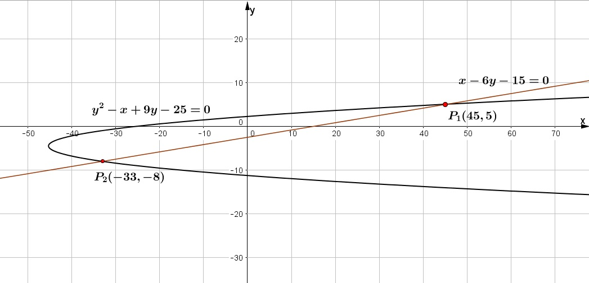

Para estos dos lugares geométricos podemos considerar los tres casos siguientes.
| i. Cuando la recta y la parábola se intersectan en un punto de coordenadas $P(x,y)$. | ii. Cuando la recta y la parábola se intersectan en dos puntos de coordenadas: $P_1 (x_1 , y_1 )$ y $P_2 (x_2 , y_2)$. | iii. Cuando la recta y la parábola no se intersectan. |
Estos casos dependen del procedimiento algebraico que se va dando cuando se resuelve el sistema formado por una ecuación lineal y una cuadrática.
Ejemplo 1. Obtén el o los puntos de intersección si los hay entre la recta: $x-6y-15=0$ y la parábola $y^2 -x + 9y - 25 =0$. Verifica tu resultado utilizando GeoGebra.
Paso 1. Se despeja una de las dos variables de la recta: $x-6y-15=0$, despejemos "x".
$$x= 6y + 15$$
Paso 2. Sustituimos la variable despejada en la ecuación de la parábola.
$$y^2 -(6y+15) +9y -25 = 0$$
Paso 3. Se resuelve la ecuación resultante después de simplificar.
$$y^2 -6y-15 +9y -25 = 0$$
$$y^2 +3y -40 = 0$$
$$(y+8)(y-5)$$
$$y-5=0 \ \text e \ y+8=0$$
$$y_1 = 5 \ \text e \ y_2 = -8$$
Paso 4. Sustituyendo los resultados del paso anterior en la expresión (1) del paso 1 obtenemos lo siguiente:
Para:
$y_1 = 5; x_1 = 6(5) + 15 = 30 + 15$ por lo tanto $P_1 (45,5)$.
Para:
$y_2 =-8; x_2 = 6(-8) + 15 = -48 + 15= -33$ por lo tanto $P_2 (-33, -8)$.
Solución: Puntos de intersección: $P_1 (45,5)$ y $P_2(-33,-8)$$.
Verificación del problema utilizando GeoGebra.
